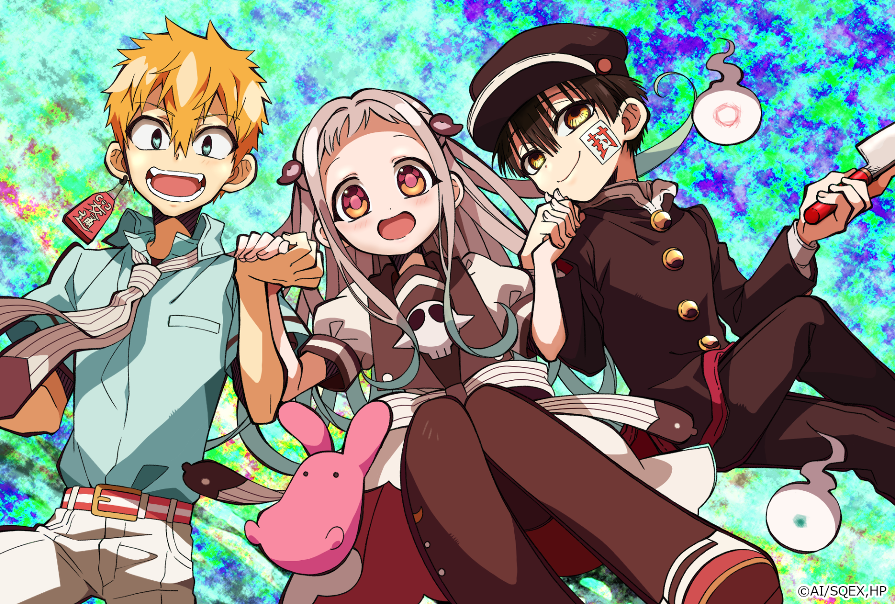
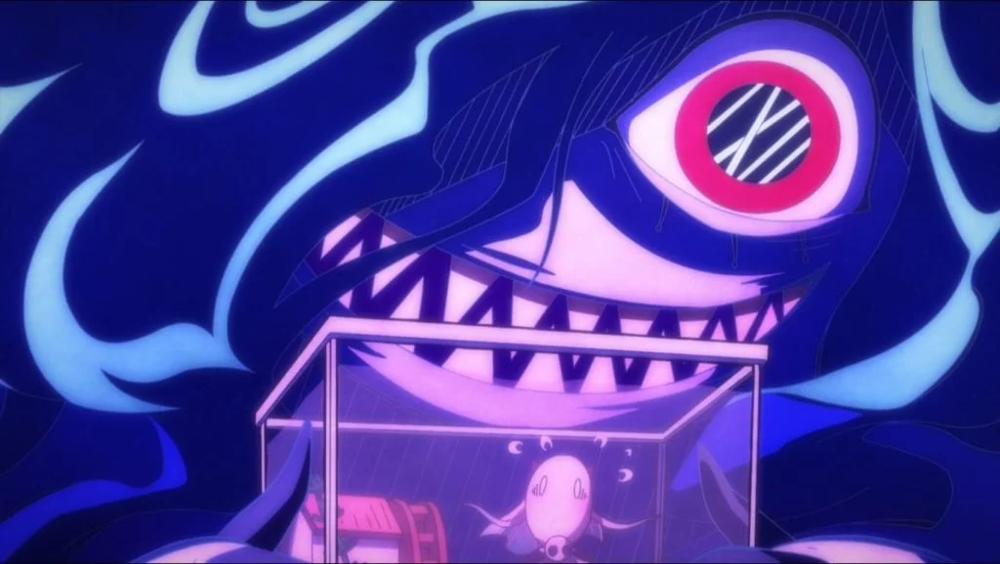

jibaku Shounen Hanako-kun
jibaku Shounen Hanako-kun ou Toilet-Bound Hanako-kun é uma série de mangá japonês criado por Iro Aida, já foram publicados 15 volumes, e recentemente adaptado para anime, sua estreia foi dia 9 de Janeiro de 2020 no Japão.

A história conta que um dos rumores dentro da Escola Kamome diz que, se você chamar o nome Hanako-san dentro do banheiro feminino do terceiro andar,
um espírito será invocado e te garantirá um desejo.Acompanha Nene Yashiro, uma garota que adora ocultismos e sonha com romances. Em um certo dia,
ela decide ir atrás do mistério envolvendo o banheiro feminino, no entanto, não imaginava que a Hanako-san que esperava encontrar,
na verdade fosse um garoto totalmente diferente do que os rumores diziam.
Alerta Spoiler
O anime contém 12 episódios, aqui eu estarei dando um resumo do primeiro episódio.O inicio mosta uma garota que almeja realizar seu desejo de conquistar o garoto por quem ela desperta um certo sentimento, como Yashiro não possui muitas qualidades atrativas ou mesmo beleza sobressaltante.A garota pretende tentar a lenda do banheiro,para fazer com que o garoto por quem ela estava apaixonada gostasse dela.
Com as palavras mágicas: “Hanako-kun, Hanako-kun,
você está aí” e com três batidas na porta do banheiro, o tal fantasma deu as caras. Como a história de Hanako-kun não passava de boatos de
crianças, não se tinha uma ideia formada sobre sua fisionomia.Ao aparecer, percebe-se que Hanako-kun não passa de uma criança.
Por se tratar de um pedido sobre-humano e que interfere diretamente no livre-arbítrio, não foi bem um desejo de fato concedido de forma mágica.
Pelo contrário, foram séries de tentativas, com a ajuda de Hanako-kun, para impressionar o tal garoto e fazer com que ele notasse a presença de Yashiro.
Infelizmente todas foram um total fracasso.
Ao encontrar as escamas de sereia, um artefato mágico que possibilita a união entre duas pessoas por toda a eternidade, Yashiro encontra ali uma oportunidade para ficar próxima de seu amor para toda a vida. A pessoa que ingerisse a escama de sereia, estaria amaldiçoada a se tornar um peixe. Sem saber previamente dessa informação, Yashiro engole as escamas de sereia de uma vez.

Ela não consegue criar coragem para oferecer também ao garoto e acaba entrando numa batalha contra a rainha monstro sereia, que vem ao mundo dos humanos para levá-la para o fundo do mar.
Afinal, agora ela era um peixe, então estava na alçada da sereia maligna.Por sorte, Hanako-kun surge do nada e entra numa luta insana contra o monstro.
Por fim, Hanako-kun salva a menina do monstro e se dispõe a realizar mais um desejo a ela. A única condição dada por Hanako-kun é que ela trabalhasse para ele. E assim, automaticamente, o destino deles estariam ligados, tanto no mundo dos mortais como no mundo sobrenatural. Inicia-se, então, uma história de amor e muita comédia.